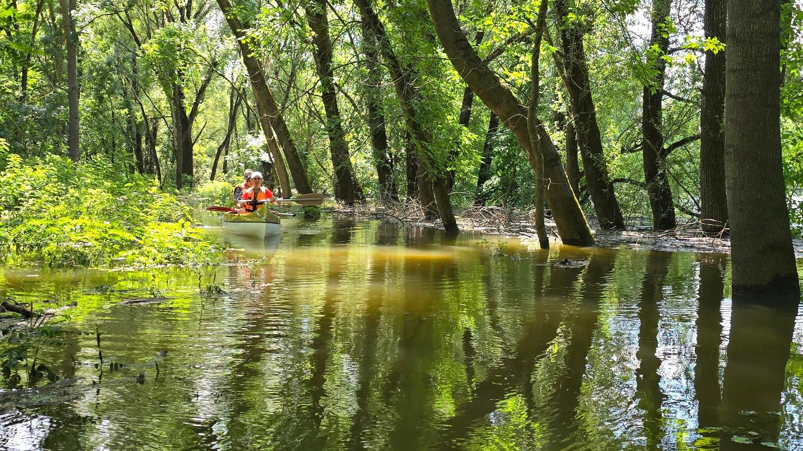
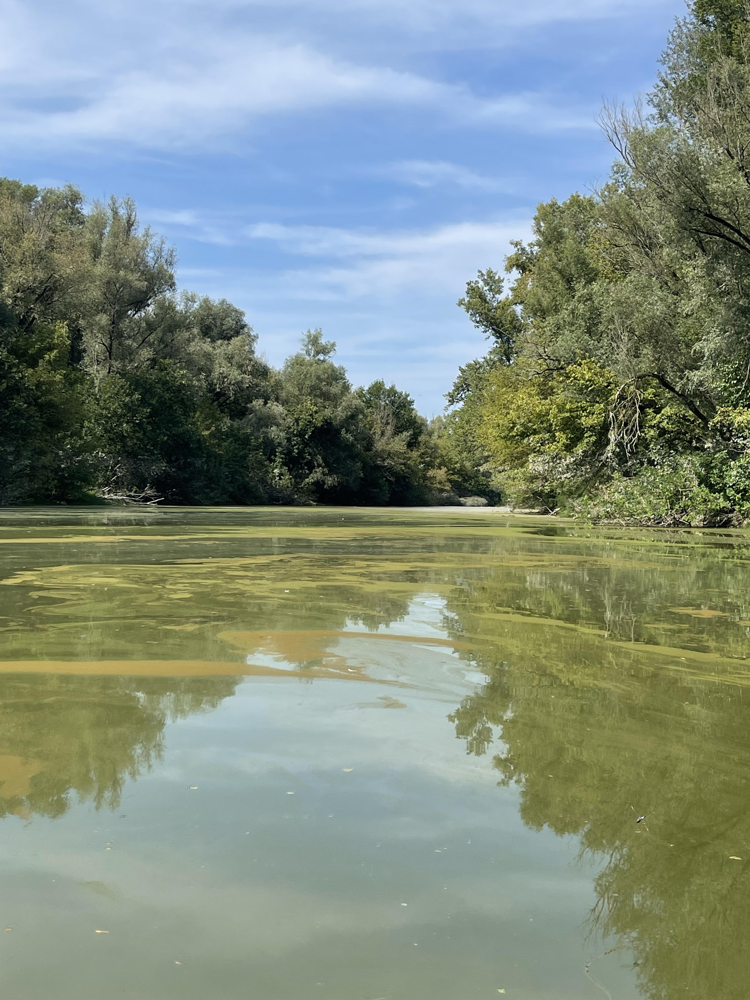
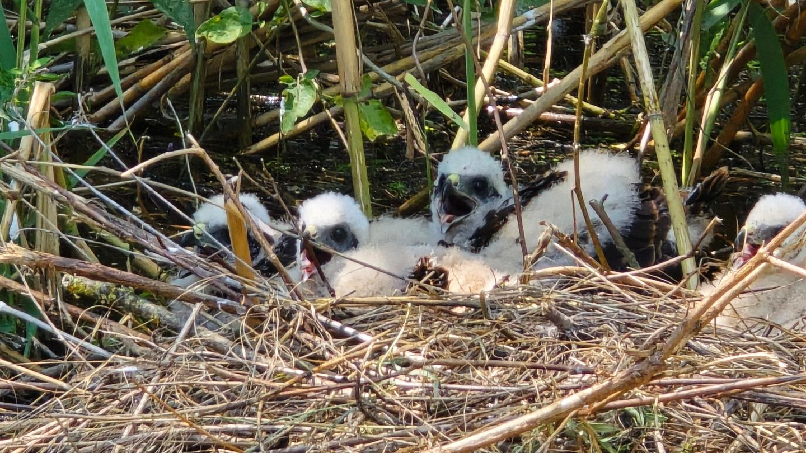
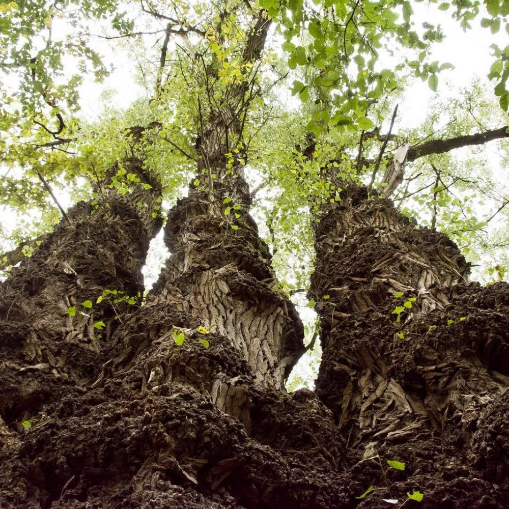

Milyen útvonalon túrázunk?
A Gemenc számos szépséget tartogat, a vízállás függvényében több,
rövidebb és hosszabb útvonalat is bejárhatunk, amelyek során
beevezhetünk a Gemenci erdő fái közé, vagy a Vén-Dunán
csordogálva a természet csendes megfigyelésével tölthetjük az időt,
de akár sütkérezhetünk a homokpadokon is. Bármelyik túrára essen
is a választás, garantáltan élménygazdag programban lesz része
mindenkinek.

Vén-Duna
A Vén-Duna szinte minden vízállásnál hangulatos vízitúra útvonalat
kínál.
A túra Baja-Dunafürdőről indul, a Vén-Duna szigetének
(Hódok szigete, Szúnyogsziget) érintésével, az elérhető mellékágak
bejárásával a Dunán való visszatéréssel kb. 10 km hosszú, könnyen
evezhető kirándulást jelent, amely a kezdő kenusoknak is ideális.

Rezéti-Duna
A Rezéti-Duna a folyam legnagyobb Gemenci mellékága, amely
fokozottan védett területként többek között számos védett
madárnak (szürke gém, rétisas, barna kánya, fekete gólya,
nagykócsag) biztosít otthont, amelyeket szerencsés esetben mi is
megcsodálhatunk, de akár hűsölő szarvasokat, vaddisznókat is
láthatunk.
A közel 20 km hosszú túra Érsekcsanádról indul. Az egész
napos élménygazdag kirándulás végén Baja-Dunafürdőre érkezünk.
A sofőröket természetesen visszaszállítjuk Érsekcsanádra az
autóikhoz.

Szeremlei Sugo
A Szeremlei Sugovica (Szeremlei-Holt-Duna) kb 10 km hosszú,
zsilippel szabályozott álló víz , ami Bajától indul Szeremlét érintve és
a Kádár-sziget alatt torkollik a Dunába. Megfelelő vízállás esetén
különleges kiránduló helyszín, mivel vízinövényekben gazdag és
túránk során többek között szürke- és vörösgémmel, nagy- és
kiskócsaggal, bütyköshattyúval, barnakányával és barna réti héjával
is találkozhatunk.
Ezeken az útvonalakon kívül, ha egy csapat szeretne más helyszínről
(Baja 50km-es körzete)indítható túrát, jelezze, és megbeszélhetjük a
lehetőségeket.

Ferenc-Tápcsatorna
Nagyon ígéretes a Ferenc tápcsatorna is, ahol olyan madarakat is láthatunk amiket Gemencen nem.

Pörbölyi Titán
A 100 éves, 12 m kerületű, 35 m magas több sarjból összenőtt
csomoros fekete nyár a Móric-Duna partján található. A Pörbölyi
Titánt 2013-ban az ország legnagyobb fájává nyilvánították.
A faóriást az év nagy részében gyalog vagy kerékpárral lehet
megközelíteni, azonban megfelelő vízállás esetén kenuzható a
Dunaág, így vízi úton is ellátogathatunk a térség méltán híres
fájához.